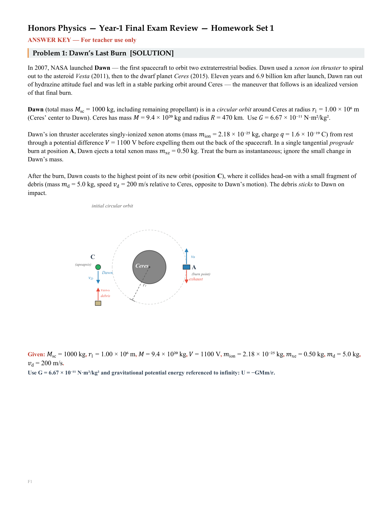
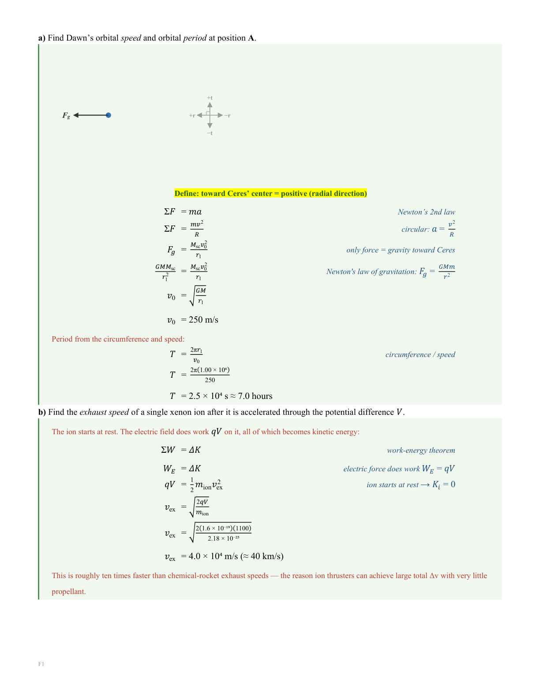
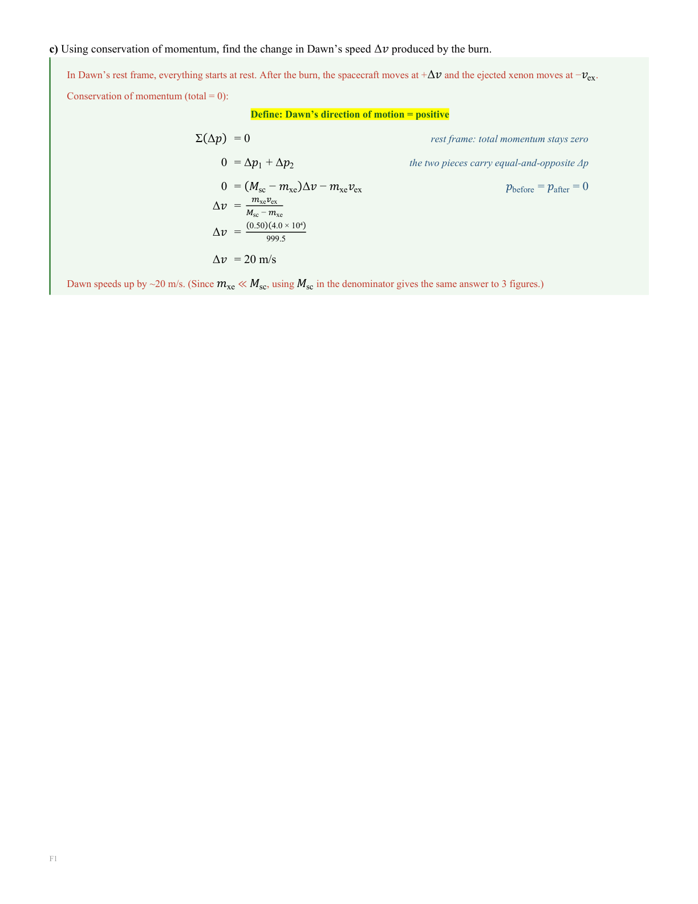
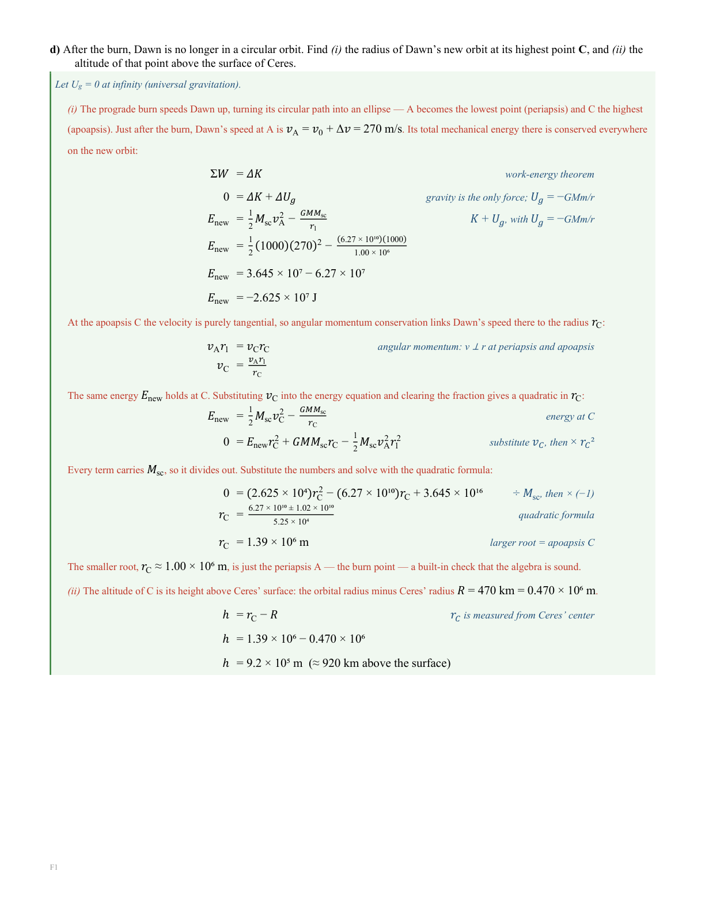
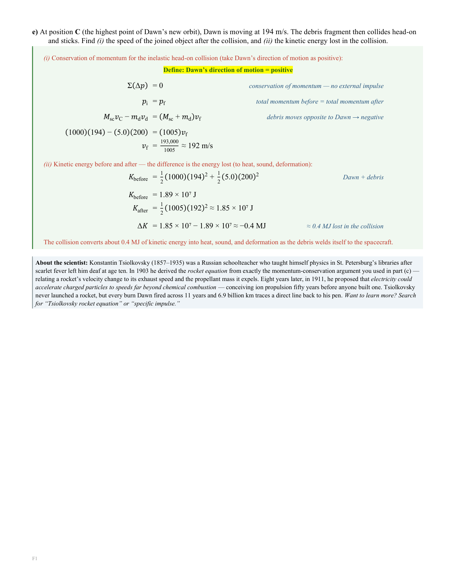

Systems showcase · deep dive
The gallery
A wall of what the system actually makes — one harder problem worked through in full, page by page, and the correctness machinery that keeps it honest. Every artifact here was generated by the pipeline, not hand-built for show. Click any page to read it full size.
Every figure in a highlighted box is harvested live from the repository with a source and a verified date — hover to read them.

A harder problem: the assignment
One harder problem, generated end to end: the scenario, a computed orbit diagram, and the quantities the student is handed. Nothing here is hand-typed — the page is directed from code.

Solutions Page 1 of 4
The opening parts, worked: the orbit from Newton's second law, then the ion's exhaust speed from the work-energy theorem — an exhaust roughly ten times faster than a chemical rocket's. Every step carries its reason beside it.

Solutions Page 2 of 4
The burn, worked in the spacecraft's own rest frame: conservation of momentum turns half a kilogram of ejected xenon into the change in speed that reshapes the whole orbit.

Solutions Page 3 of 4
The hardest part of the problem: energy and angular momentum combined into a quadratic, solved — and the discarded root turns out to be the burn point itself, a built-in check that the algebra is sound.

Solutions Page 4 of 4
The closing parts, and the beat the whole page is built toward: a deaf schoolteacher who worked out the rocket equation with a pen, decades before anyone flew one. Every problem ends with the person behind the physics.
Plain Claude VS the Platform
The same assignment — a car cresting a hilltop — worked two ways, and the same page of each: the solution, which is where they part. A plain assistant, working alone, is genuinely capable: its physics is right and its diagram is real. What it cannot bring is the course. Its equations are typed as ordinary text rather than set as real equations, the energy chart students reason with is absent, and it names the normal force with the very letter that also means newtons — so its own answer collides with its own units. Drag the divider.
A quarter century of the same course
A friction test the teacher typed a generation ago — text only, every diagram drawn by hand — and a page the engine generates today from code, diagram and energy scaffolds and all. Drag the divider.
Caught in Review: Validators Hard at Work
An earlier render with flawed ground geometry, and the page re-derived from corrected drawing code. The fix lands in the code and the page is regenerated — never patched by hand. Drag the divider to watch the ground heal.